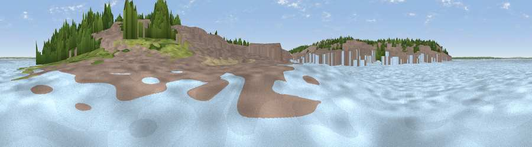

Viewpoint near East Cowes
#43421 in England · top 88% of its area beats it · near East CowesThe view, rendered

A 360° render of this exact spot computed from the terrain model, tree cover and land cover — summer colours, afternoon light, calibrated against photographs of famous viewpoints. Real trees, hedges and buildings will differ in detail.
The panorama
Grey silhouette: terrain skyline in each direction (720 bearings, Earth curvature and refraction included). Dashed green: skyline with trees (+15 m) and buildings (+8 m) as obstacles. Blue strip: how far the ground is visible on each bearing.
Where the view opens
Wedge length = distance to the farthest visible ground on that bearing (vegetation-aware). Rings at 10, 25 and 50 km.
What fills the view
40% built-up · 36% water · 15% woodland · 7% grassland ·
Angular shares of the visible panorama (visual magnitude), not map area. Landscape diversity 0.55 (0–1 Shannon).
Key numbers
More beautiful places nearby
The staircase of upgrades: each row has a higher view potential than everything closer. Driving times are estimates from straight-line distance, calibrated against real road routing — check an actual route before setting out.
| Place | Direction | Drive | Score |
|---|---|---|---|
| Viewpoint near East Cowes | ENE · 1 km | ~3 min | 29.0 |
| Viewpoint near Gurnard | W · 2 km | ~6 min | 36.8 |
| Whippingham Hill | SSE · 3 km | ~7 min | 37.8 |
| Viewpoint near Gurnard | WSW · 4 km | ~9 min | 48.4 |
| Sticelett Hill | WSW · 4 km | ~9 min | 48.7 |
| Viewpoint near Porchfield | WSW · 6 km | ~13 min | 51.6 |
| Viewpoint near Porchfield | WSW · 7 km | ~15 min | 54.2 |
| Viewpoint near Carisbrooke | SSW · 8 km | ~17 min | 72.1 |
50.76124, -1.28929 · source: osm viewpoint · position refined by local search. Computed location — check access rights before visiting.